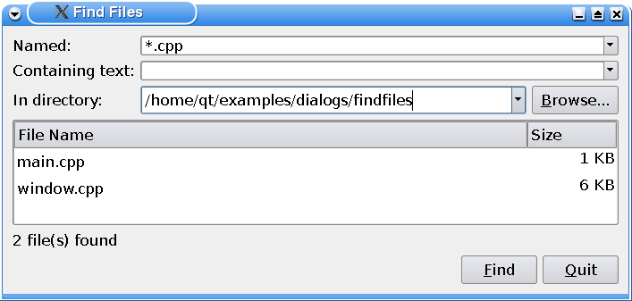
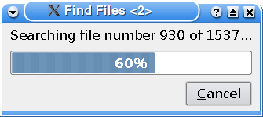

Find Files Example

With the Find Files application the user can search for files in a specified directory, matching a specified file name (using wild cards if appropriate) and containing a specified text.
The user is provided with a Browse option, and the result of the search is displayed in a table with the names of the files found and their sizes. In addition the application provides a total count of the files found.
Window Class Definition
The Window class inherits QWidget, and is the main application widget. It shows the search options, and displays the search results.
class Window : public QWidget { Q_OBJECT public: Window(QWidget *parent = 0); private slots: void browse(); void find(); void animateFindClick(); void openFileOfItem(int row, int column); void contextMenu(const QPoint &pos); private: QStringList findFiles(const QStringList &files, const QString &text); void showFiles(const QStringList &files); QComboBox *createComboBox(const QString &text = QString()); void createFilesTable(); QComboBox *fileComboBox; QComboBox *textComboBox; QComboBox *directoryComboBox; QLabel *filesFoundLabel; QPushButton *findButton; QTableWidget *filesTable; QDir currentDir; };
We need two private slots: The browse() slot is called whenever the user wants to browse for a directory to search in, and the find() slot is called whenever the user requests a search to be performed by pressing the Find button.
In addition we declare several private functions: We use the findFiles() function to search for files matching the user's specifications, we call the showFiles() function to display the results, and we use createButton(), createComboBox() and createFilesTable() when we are constructing the widget.
Window Class Implementation
In the constructor we first create the application's widgets.
Window::Window(QWidget *parent) : QWidget(parent) { QPushButton *browseButton = new QPushButton(tr("&Browse..."), this); connect(browseButton, &QAbstractButton::clicked, this, &Window::browse); findButton = new QPushButton(tr("&Find"), this); connect(findButton, &QAbstractButton::clicked, this, &Window::find); fileComboBox = createComboBox(tr("*")); connect(fileComboBox->lineEdit(), &QLineEdit::returnPressed, this, &Window::animateFindClick); textComboBox = createComboBox(); connect(textComboBox->lineEdit(), &QLineEdit::returnPressed, this, &Window::animateFindClick); directoryComboBox = createComboBox(QDir::toNativeSeparators(QDir::currentPath())); connect(directoryComboBox->lineEdit(), &QLineEdit::returnPressed, this, &Window::animateFindClick); filesFoundLabel = new QLabel; createFilesTable();
We create the application's buttons using the private createButton() function. Then we create the comboboxes associated with the search specifications, using the private createComboBox() function. We also create the application's labels before we use the private createFilesTable() function to create the table displaying the search results.
QGridLayout *mainLayout = new QGridLayout(this);
mainLayout->addWidget(new QLabel(tr("Named:")), 0, 0);
mainLayout->addWidget(fileComboBox, 0, 1, 1, 2);
mainLayout->addWidget(new QLabel(tr("Containing text:")), 1, 0);
mainLayout->addWidget(textComboBox, 1, 1, 1, 2);
mainLayout->addWidget(new QLabel(tr("In directory:")), 2, 0);
mainLayout->addWidget(directoryComboBox, 2, 1);
mainLayout->addWidget(browseButton, 2, 2);
mainLayout->addWidget(filesTable, 3, 0, 1, 3);
mainLayout->addWidget(filesFoundLabel, 4, 0, 1, 2);
mainLayout->addWidget(findButton, 4, 2);
setWindowTitle(tr("Find Files"));
const QRect screenGeometry = QApplication::desktop()->screenGeometry(this);
resize(screenGeometry.width() / 2, screenGeometry.height() / 3);
}
Then we add all the widgets to a main layout using QGridLayout. We have, however, put the Find and Quit buttons and a stretchable space in a separate QHBoxLayout first, to make the buttons appear in the Window widget's bottom right corner.
void Window::browse() { QString directory = QDir::toNativeSeparators(QFileDialog::getExistingDirectory(this, tr("Find Files"), QDir::currentPath())); if (!directory.isEmpty()) { if (directoryComboBox->findText(directory) == -1) directoryComboBox->addItem(directory); directoryComboBox->setCurrentIndex(directoryComboBox->findText(directory)); } }
The browse() slot presents a file dialog to the user, using the QFileDialog class. QFileDialog enables a user to traverse the file system in order to select one or many files or a directory. The easiest way to create a QFileDialog is to use the convenience static functions.
Here we use the static QFileDialog::getExistingDirectory() function which returns an existing directory selected by the user. Then we display the directory in the directory combobox using the QComboBox::addItem() function, and updates the current index.
QComboBox::addItem() adds an item to the combobox with the given text (if it is not already present in the list), and containing the specified userData. The item is appended to the list of existing items.
void Window::find() { filesTable->setRowCount(0); QString fileName = fileComboBox->currentText(); QString text = textComboBox->currentText(); QString path = QDir::cleanPath(directoryComboBox->currentText());
The find() slot is called whenever the user requests a new search by pressing the Find button.
First we eliminate any previous search results by setting the table widgets row count to zero. Then we retrieve the specified file name, text and directory path from the respective comboboxes.
currentDir = QDir(path);
QStringList files;
findRecursion(path, fileName.isEmpty() ? QStringLiteral("*") : fileName, &files);
if (!text.isEmpty())
files = findFiles(files, text);
showFiles(files);
}
We use the directory's path to create a QDir; the QDir class provides access to directory structures and their contents.
static void findRecursion(const QString &path, const QString &pattern, QStringList *result) { QDir currentDir(path); const QString prefix = path + QLatin1Char('/'); foreach (const QString &match, currentDir.entryList(QStringList(pattern), QDir::Files | QDir::NoSymLinks)) result->append(prefix + match); foreach (const QString &dir, currentDir.entryList(QDir::Dirs | QDir::NoSymLinks | QDir::NoDotAndDotDot)) findRecursion(prefix + dir, pattern, result); }
We recursively create a list of the files (contained in the newl created QDir) that match the specified file name.
Then we search through all the files in the list, using the private findFiles() function, eliminating the ones that don't contain the specified text. And finally, we display the results using the private showFiles() function.
If the user didn't specify any text, there is no reason to search through the files, and we display the results immediately.

QStringList Window::findFiles(const QStringList &files, const QString &text) { QProgressDialog progressDialog(this); progressDialog.setCancelButtonText(tr("&Cancel")); progressDialog.setRange(0, files.size()); progressDialog.setWindowTitle(tr("Find Files"));
In the private findFiles() function we search through a list of files, looking for the ones that contain a specified text. This can be a very slow operation depending on the number of files as well as their sizes. In case there are a large number of files, or there exists some large files on the list, we provide a QProgressDialog.
The QProgressDialog class provides feedback on the progress of a slow operation. It is used to give the user an indication of how long an operation is going to take, and to demonstrate that the application has not frozen. It can also give the user an opportunity to abort the operation.
QMimeDatabase mimeDatabase;
QStringList foundFiles;
for (int i = 0; i < files.size(); ++i) {
progressDialog.setValue(i);
progressDialog.setLabelText(tr("Searching file number %1 of %n...", 0, files.size()).arg(i));
QCoreApplication::processEvents();
We run through the files, one at a time, and for each file we update the QProgressDialog value. This property holds the current amount of progress made. We also update the progress dialog's label.
Then we call the QCoreApplication::processEvents() function using the QApplication object. In this way we interleave the display of the progress made with the process of searching through the files so the application doesn't appear to be frozen.
The QApplication class manages the GUI application's control flow and main settings. It contains the main event loop, where all events from the window system and other sources are processed and dispatched. QApplication inherits QCoreApplication. The QCoreApplication::processEvents() function processes all pending events according to the specified QEventLoop::ProcessEventFlags until there are no more events to process. The default flags are QEventLoop::AllEvents.
const QString fileName = files.at(i);
const QMimeType mimeType = mimeDatabase.mimeTypeForFile(fileName);
if (mimeType.isValid() && !mimeType.inherits(QStringLiteral("text/plain"))) {
qWarning() << "Not searching binary file " << QDir::toNativeSeparators(fileName);
continue;
}
QFile file(fileName);
if (file.open(QIODevice::ReadOnly)) {
QString line;
QTextStream in(&file);
while (!in.atEnd()) {
if (progressDialog.wasCanceled())
break;
line = in.readLine();
if (line.contains(text, Qt::CaseInsensitive)) {
foundFiles << files[i];
break;
}
}
}
}
return foundFiles;
}
After updating the QProgressDialog, we open the file in read-only mode, and read one line at a time using QTextStream.
The QTextStream class provides a convenient interface for reading and writing text. Using QTextStream's streaming operators, you can conveniently read and write words, lines and numbers.
For each line we read we check if the QProgressDialog has been canceled. If it has, we abort the operation, otherwise we check if the line contains the specified text. When we find the text within one of the files, we add the file's name to a list of found files that contain the specified text, and start searching a new file.
Finally, we return the list of the files found.
void Window::showFiles(const QStringList &files) { for (int i = 0; i < files.size(); ++i) { const QString &fileName = files.at(i); const QString toolTip = QDir::toNativeSeparators(fileName); const QString relativePath = QDir::toNativeSeparators(currentDir.relativeFilePath(fileName)); const qint64 size = QFileInfo(fileName).size(); QTableWidgetItem *fileNameItem = new QTableWidgetItem(relativePath); fileNameItem->setData(absoluteFileNameRole, QVariant(fileName)); fileNameItem->setToolTip(toolTip); fileNameItem->setFlags(fileNameItem->flags() ^ Qt::ItemIsEditable); QTableWidgetItem *sizeItem = new QTableWidgetItem(tr("%1 KB") .arg(int((size + 1023) / 1024))); sizeItem->setData(absoluteFileNameRole, QVariant(fileName)); sizeItem->setToolTip(toolTip); sizeItem->setTextAlignment(Qt::AlignRight | Qt::AlignVCenter); sizeItem->setFlags(sizeItem->flags() ^ Qt::ItemIsEditable); int row = filesTable->rowCount(); filesTable->insertRow(row); filesTable->setItem(row, 0, fileNameItem); filesTable->setItem(row, 1, sizeItem); } filesFoundLabel->setText(tr("%n file(s) found (Double click on a file to open it)", 0, files.size())); filesFoundLabel->setWordWrap(true); }
Both the findFiles() and showFiles() functions are called from the find() slot. In the showFiles() function we run through the provided list of file names, adding each relative file name to the first column in the table widget and retrieving the file's size using QFileInfo for the second column. For later use, we set the absolute path as a data on the QTableWidget using the the role absoluteFileNameRole defined to be Qt::UserRole + 1.
enum { absoluteFileNameRole = Qt::UserRole + 1 };
This allows for retrieving the name of an item using a convenience function:
static inline QString fileNameOfItem(const QTableWidgetItem *item) { return item->data(absoluteFileNameRole).toString(); }
We also update the total number of files found.
QComboBox *Window::createComboBox(const QString &text) { QComboBox *comboBox = new QComboBox; comboBox->setEditable(true); comboBox->addItem(text); comboBox->setSizePolicy(QSizePolicy::Expanding, QSizePolicy::Preferred); return comboBox; }
The private createComboBox() function is also called from the contructor. We create a QComboBox with the given text, and make it editable.
When the user enters a new string in an editable combobox, the widget may or may not insert it, and it can insert it in several locations, depending on the QComboBox::InsertPolicy. The default policy is is QComboBox::InsertAtBottom.
Then we add the provided text to the combobox, and specify the widget's size policies, before we return a pointer to the combobox.
void Window::createFilesTable() { filesTable = new QTableWidget(0, 2); filesTable->setSelectionBehavior(QAbstractItemView::SelectRows); QStringList labels; labels << tr("Filename") << tr("Size"); filesTable->setHorizontalHeaderLabels(labels); filesTable->horizontalHeader()->setSectionResizeMode(0, QHeaderView::Stretch); filesTable->verticalHeader()->hide(); filesTable->setShowGrid(false); filesTable->setContextMenuPolicy(Qt::CustomContextMenu); connect(filesTable, &QTableWidget::customContextMenuRequested, this, &Window::contextMenu); connect(filesTable, &QTableWidget::cellActivated, this, &Window::openFileOfItem); }
The private createFilesTable() function is called from the constructor. In this function we create the QTableWidget that will display the search results. We set its horizontal headers and their resize mode.
QTableWidget inherits QTableView which provides a default model/view implementation of a table view. The QTableView::horizontalHeader() function returns the table view's horizontal header as a QHeaderView. The QHeaderView class provides a header row or header column for item views, and the QHeaderView::setResizeMode() function sets the constraints on how the section in the header can be resized.
Finally, we hide the QTableWidget's vertical headers using the QWidget::hide() function, and remove the default grid drawn for the table using the QTableView::setShowGrid() function.
void Window::openFileOfItem(int row, int /* column */) { const QTableWidgetItem *item = filesTable->item(row, 0); openFile(fileNameOfItem(item)); } static inline void openFile(const QString &fileName) { QDesktopServices::openUrl(QUrl::fromLocalFile(fileName)); }
The openFileOfItem() slot is invoked when the user double clicks on a cell in the table. The QDesktopServices::openUrl() knows how to open a file given the file name.
filesTable->setContextMenuPolicy(Qt::CustomContextMenu);
connect(filesTable, &QTableWidget::customContextMenuRequested,
this, &Window::contextMenu);
connect(filesTable, &QTableWidget::cellActivated,
this, &Window::openFileOfItem);
void Window::contextMenu(const QPoint &pos)
{
const QTableWidgetItem *item = filesTable->itemAt(pos);
if (!item)
return;
QMenu menu;
#ifndef QT_NO_CLIPBOARD
QAction *copyAction = menu.addAction("Copy Name");
#endif
QAction *openAction = menu.addAction("Open");
QAction *action = menu.exec(filesTable->mapToGlobal(pos));
if (!action)
return;
const QString fileName = fileNameOfItem(item);
if (action == openAction)
openFile(fileName);
#ifndef QT_NO_CLIPBOARD
else if (action == copyAction)
QGuiApplication::clipboard()->setText(QDir::toNativeSeparators(fileName));
#endif
}
We set the context menu policy to of the table view to Qt::CustomContextMenu and connect a slot contextMenu() to its signal customContextMenuRequested(). We retrieve the absolute file name from the data of the QTableWidgetItem and populate the context menu with actions offering to copy the file name and to open the file.
Files: